Theory behind the model¶
TODO: AJOUTER INTRODUCTION TRADUIRE EN ANGLAIS JAI FOUTU EN VRAC LES NOTES QUE JAI PRIS
Improving the model¶
- Lenght dependance
fait varier les sites d’attachement ou la force
améliorer gradient de aurora en ajoutant un paramètre, actuellement

 (coef d’attachement) dépend aussi du kt opposé
(coef d’attachement) dépend aussi du kt opposé
Anisotropie¶
- graphe de 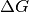 en fonction de la position x
- pente anisotropique(pente du graphe) < 0 qd force de déplacement > à la charge (force de friction de ce qui est transporté par la kinésine, ici le chromatide par exemple)
- energie reçu (chimique -> mécanique):

- en cas d’anisotropie nulle = diffusion
- evolution de l’anistropie avec le temps : linéaire et pente négative
Oscillateur¶

- notion d’espace de phase : vitesse en fonction de la position (cercle dont le rayon diminue dans le cas d’un pendule par exemple)
- vecteur d’état : ensemble des positions (1D, 2D, 3D, etc)
- notion de régime amorti et suramorti
KT model¶
- piston : force % à la vitesse
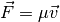 avec
 : coef de friction
: coef de friction
- ressort : force en fonction de la position (etirement)

kinetochores modélisés par un système piston + ressort
Bilan des forces¶

Forces at the right SPB¶
Friction forces (viscous drag):

Midzone force generators (applied at the right SPB):
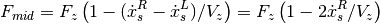
Total kinetochore microtubules force generators:
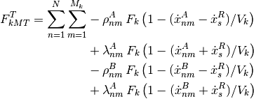
Forces at the left SPB¶
Because of the reference frame definition, 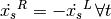. Here we substituted  with
with 
Friction forces (viscous drag): 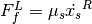
- Midzone force generators:
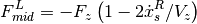
- Total kinetochore microtubules force generators:

Forces at centromere 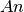¶
Drag:

- Cohesin bond (Hook spring) restoring force exerted by
centromere. We want the centromeres to be able to cross each over. In one dimension, this introduces a discontinuity. In the previous version, the ‘swap’ mechanism was solving this directly (as 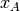 and
 are exchanged). This is not possible any more, as the ‘swap’ mechanism is now irrelevant, as there is no prefered
side for a given centromere.}:
are exchanged). This is not possible any more, as the ‘swap’ mechanism is now irrelevant, as there is no prefered
side for a given centromere.}:
With
 .
.Total visco-elastic bond between the centromere A and the attachment sites:
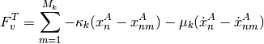
Forces at attachment site  ¶
¶
Visco-elastic bond between the centromere A and the attachment sites:

Kinetochore microtubules force generators:

With  and 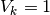 (for now on, we are taking
and 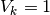 (for now on, we are taking  as
unit force and
as
unit force and  as unit speed), this gives:
as unit speed), this gives:

Eventually, substituting  with
with  and 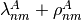 with
and 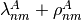 with  :
:

Coefficient d’attachement et détachement¶
The attachment sites attach or detach stochastically with rates  and
and  , i.e:
, i.e:
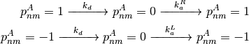
The detachment rate depends on the position of the attached site with respect to the chromosome center:

The attachment rate depends on the state of the other attachment sites:
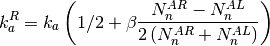
In the discrete time step model, the rates are calculated at each time step for each attachment site.


Equation differientielle du premier ordre¶
In the viscous nucleoplasm, inertia is negligible. Newton first principle thus reduces to: $ sum F = 0 $. This force balance equation can be written for each elements of the spindle. To simplify further, the equations for the right and left SPBs can be combined:
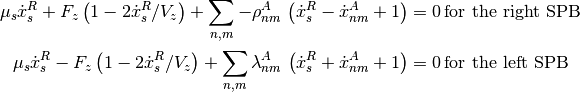
The difference of those two expressions gives, with the same substitutions as before:

All the equations are gathered together in the system of equations:

The vector  has 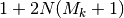 elements and is defined as
follow (Note that the left SPB is omitted in .):
has 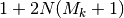 elements and is defined as
follow (Note that the left SPB is omitted in .):

In matrix form, we have:
![X = &
\begin{pmatrix}
x_s^R\\
x_n^A\\
x_{nm}^A\\
x_n^B\\
x_{nm}^B\\
\end{pmatrix} =
\begin{pmatrix}
\text{right SPB}\\
\text{centromere }A, n\\
\text{attachment site }A, n,m\\
\text{centromere }B, n\\
\text{attachment site }B, n,m\\
\end{pmatrix}\\
A = &
\begin{pmatrix}
- 2 \mu_s - 4 F_z/V_z - \sum (|\pi_{nm}^A| + |\pi_{nm}^B|)& \hdots & \pi_{nm}^A &
\hdots & \pi_{nm}^B\\
\hdots & -\mu_c - M_k \mu_k& \mu_k & \hdotsfor{2}\\
\pi_{nm}^A & \mu_k & - \mu_k - |\pi_{nm}^A| & \hdotsfor{2}\\
\hdotsfor{3} & -\mu_c - M_k \mu_k & \mu_k\\
\pi_{nm}^B & \hdotsfor{2} & \mu_k & - \mu_k - |\pi_{nm}^B| \\
\end{pmatrix}, \\
B = &
\begin{pmatrix}
\,0\, & \hdotsfor{4}\\
\hdots & - \kappa_c - M_k \kappa_k & \kappa_k &
\kappa_c & \hdots \\
\hdots & \kappa_k & -\kappa_k & \hdotsfor{2}\\
\hdots & \kappa_c & \hdots &
-\kappa_c - M_k \kappa_k & \kappa_k \\
\hdotsfor{3} & \kappa_k & - \kappa_k\\
\end{pmatrix}\\
C = &
\begin{pmatrix}
2Fz - \sum_{n,m}(|\pi_{nm}^A| + |\pi_{nm}^B|) \\
- \delta_n \kappa_c d_0\\
\pi_{nm}^A\\
\delta_n \kappa_c d_0\\
\pi_{nm}^B\\
\end{pmatrix}
\mathrm{with}\, \delta_n =
\begin{cases}
1 &\mathrm{if}\quad x_n^A < x_n^B\\
-1 &\mathrm{if}\quad x_n^A > x_n^B\\
\end{cases}](_images/math/fa3632ea302b57a3e474f867a80c1c24e4927a37.png)
As is actually done in the python implementation,
 can be decomposed into a time invariant part
can be decomposed into a time invariant part  and a
variable part
and a
variable part  with:\
with:\

For the sake of clarity,  can be decomposed in a kinetochore and a
cohesin part,
can be decomposed in a kinetochore and a
cohesin part,  :
:

Table Of Contents
Previous topic
Welcome to kt_simul’s documentation